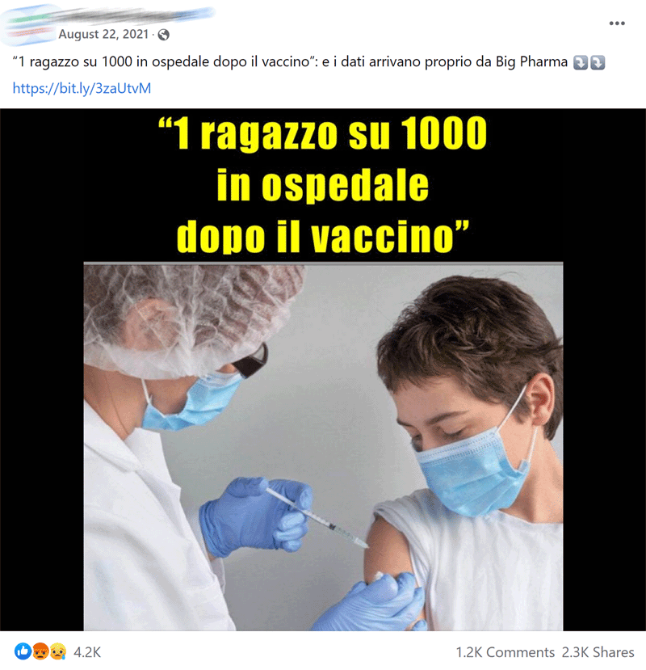

#3
ottobre 2024
Bolla filtro
Stato di isolamento intellettuale che può derivare da algoritmi che forniscono alle persone informazioni a supporto di ciò che esse già credono e apprezzano, in base al loro comportamento passato e alla cronologia delle loro ricerche.

Il bias confermativo potrebbe indurre John a interpretare il post come una prova che i vaccini sono dannosi. Potrebbe quindi dare un like al post senza verificare se la notizia è falsa o meno.
L’algoritmo di Facebook mostrerà automaticamente a John altri contenuti condivisi dal creatore del post e suggerirà contenuti sponsorizzati simili nel suo feed.
A causa della legge dei piccoli numeri, John potrebbe considerare un campione relativamente piccolo di questi post come altamente persuasivo.
Potrebbe per questo finire con il riporre una fiducia ingiustificata nel fatto le prove contro i vaccini siano schiaccianti, quando in realtà non lo sono.
Levy (2021) ha condotto un esperimento per verificare formalmente l’ipotesi che l’algoritmo di Meta esponga in modo sproporzionato le persone a notizie che riflettono le loro opinioni.
Decine di migliaia di utenti di Facebook sono stati reclutati tramite il sistema “Inserzioni di Facebook” per:
Per leggere l’articolo, clicca QUI.
I partecipanti sono stati assegnati casualmente a uno di tre gruppi di trattamento: liberale, conservatore, controllo.
Ai partecipanti assegnati a liberale e conservatore è stato chiesto di mettere un like a un massimo di quattro testate giornalistiche (slide seguente).
Quando gli utenti mettono like a una pagina, i post condivisi da quest’ultima tendono successivamente ad apparire nel loro feed.
I notiziari (straight news programmes) riportano fatti in modo imparziale (o perlomeno dichiarano di farlo).
I programmi di opinione (opinion programmes) trasmettono il punto di vista di conduttricx e ospiti sulle notizie.
Programmi di opinione diversi offrono narrazioni diverse, e spesso contrastanti, della realtà.
Se gli spettatori si fidano delle affermazioni fatte nei programmi di opinione come di quelle fatte nei notiziari, non riuscendo a distinguere tra opinioni e fatti, allora le diverse narrazioni possono portare le persone ad avere visioni radicalmente diverse della realtà.
Bursztyn et al. (2023) hanno condotto un esperimento su un campione di telespettatori delle due più popolari reti statunitensi di informazione via cavo: MSNBC e Fox News.
Ai partecipanti è stato chiesto di ipotizzare con la maggiore precisione possibile un dato reale riguardante:
Per leggere l’articolo, clicca QUI.
Le ipotesi sono state formulate in riferimento a una data specifica, selezionata casualmente.
Per permettere ai partecipanti di indovinare, è stata data loro la possibilità di visualizzare uno tra quattro filmati televisivi, tutti estratti da programmi trasmessi nella stessa settimana della data pertinente alla loro ipotesi.
Incentivo ad apprendere fatti oggettivi: i partecipanti sono stati informati che, se la loro risposta non si fosse discostata di oltre il 5% dal dato reale, avrebbero vinto un coupon Amazon.
Domanda: Quale fonte di informazione (notiziario od opinione) pensi abbia scelto la maggioranza degli spettatori di Fox News? Quale pensi abbia scelto la maggioranza degli spettatori di MSNBC?
Per rispondere (in modo anonimo) puoi:
2967 620.La tendenza delle persone a fare affidamento sui programmi di opinione per informarsi ha conseguenze importanti.
Bursztyn et al. (2023) hanno esaminato l’effetto di narrazioni differenti proposte da diversi programmi di opinione durante prime fasi della pandemia Covid-19 negli Stati Uniti.
Risultato: gli spettatori dei diversi programmi di opinione differiscono significativamente nei tempi di adozione di comportamenti preventivi.
Sia Hannity che Tucker Carlson Tonight, entrambi programmi di opinione trasmessi su Fox News, hanno un taglio di destra.
Tuttavia, Tucker Carlson Tonight ha sottolineato la gravità del Covid già nel gennaio 2020, mentre Hannity l’ha a lungo ignorata o minimizzata.
Bursztyn et al. (2023) hanno trovato che…
Finora la discussione ha riguardato la persuasione esercitata da altri individui.
Che dire, invece, della persuasione che esercitiamo su noi stessx?
Schwardmann, Tripodi, e van der Weele (2022) hanno studiato la tendenza delle persone ad auto-persuadersi della superiorità fattuale e morale delle posizioni che esse devono sostenere.
Per leggere l’articolo, clicca QUI.
Il punto: le persone che si trovano a difendere un particolare punto di vista tendono a modificare le proprie opinioni personali per allinearle alle argomentazioni portate a supporto di quel punto di vista.
Perché ci interessa? L’auto-persuasione, tra le altre cose…
Il formato di questi tornei richiama i dibattiti parlamentari britannici e prevede l’assegnazione casuale alle posizioni pro e contro una determinata affermazione (mozione).
Ciascun dibattito coinvolge due squadre che sostengono la mozione (proposition side) e due squadre che vi si oppongono (opposition side). Ogni squadra è composta da due dibattenti.
I dibattenti sono generalmente studenti o ex-studenti appartenenti a società di dibattito.
Ai dibattenti non è permesso effettuare ricerche sul tema della mozione. Ciascun dibattente ha a disposizione 15 minuti per preparare il proprio discorso.
Le mozioni sono ideate da giudici in modo tale da permettere argomentazioni ragionevoli e bilanciate per ciascun lato del dibattito. I giudici sono inoltre incaricati di assegnare i punteggi ai discorsi e stabilire qual è la squadra vincitrice.
Le mozioni riguardano temi ricorrenti nel discorso politico: migrazione, cambiamento climatico, regolamentazione delle nuove tecnologie, ecc.
I questionari (baseline, pre-dibatito e post-dibattito) hanno l’obietivo di misurare tre diverse caratteristiche individuali: (1) aspettative fattuali; (2) fiducia nel proposition side; (3) attitudini rivelate.
Aspettativa fattuale: probabilità soggettiva che un’affermazione fattuale legata alla mozione dibattuta sia vera o no.
L’esperimento si è svolto in concomitanza di quattro tornei internazionali di dibattito, due tenutisi di persona (Erasmus Rotterdam Open 2019, Munich Research Open 2019) e due online a causa del Covid (Amsterdam Open 2020, London School of Economics Open 2021).
Ciascunx partecipante al torneo è stato intervistato sia prima sia dopo il dibattito relativo a ciascuna mozione.
In totale, 473 dibattenti appartenenti a 58 paesi diversi hanno compilato 4854 sondaggi relativi a 19 diverse mozioni.
Nel sondaggio baseline, somministrato prima che i dibattenti conoscano la mozione e prima che siano assegnati a un lato del dibattito, le risposte dei dibattenti selezionati in seguito per sostenere il proposition side non differiscono da quelle dei dibattenti selezionati per sostenere l’opposition side.
Nei questionari pre-dibatto le risposte cominciano a divergere significativamente, a riprova della presenza di auto-persuasione. Questa differenza significativa perdura anche nelle risposte post-dibattito.
Secondo la “teoria degli argomenti persuasivi” (Vinokur e Burstein 1974), il numero degli argomenti che un lato del dibattito riesce a mettere sul tavolo è un fattore chiave per determinare la persuasività di quel lato.
Per testare se i risultati sono in linea con questa predizione, Schwardmann, Tripodi, e van der Weele (2022) hanno chiesto nel questionario pre-dibattito quanti fossero gli argomenti individuati dal dibattente a sostegno della propria previsione.
Hanno inoltre chiesto quanti di questi argomenti fossero ritenuti particolarmente forti dal dibattente.
Le stime suggeriscono che il numero di argomentazioni determina il 14% dell’effetto auto-persuasivo nelle aspettative fattuali, il 44% nella fiducia e il 58% nelle attitudini rilevate.
Questi risultati indicano che la generazione di argomenti ha un ruolo sostanziale sull’auto-persuasione.
Ulteriore domanda di ricerca: L’auto-persuasione influenza positivamente la probabilità di vincere un dibattito?
Vi sono casi in cui le informazioni rilevanti per prendere una decisione vengono apprese nel corso di giorni, mesi, anni.
Consumiamo tali informazioni in varie forme, tra cui: